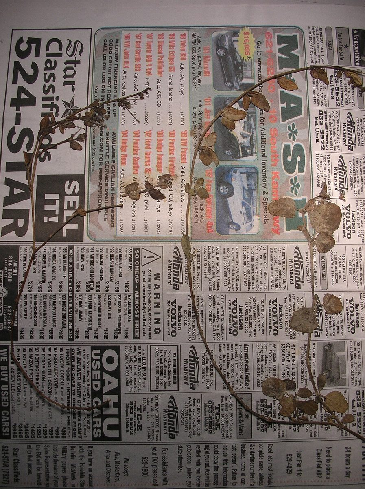
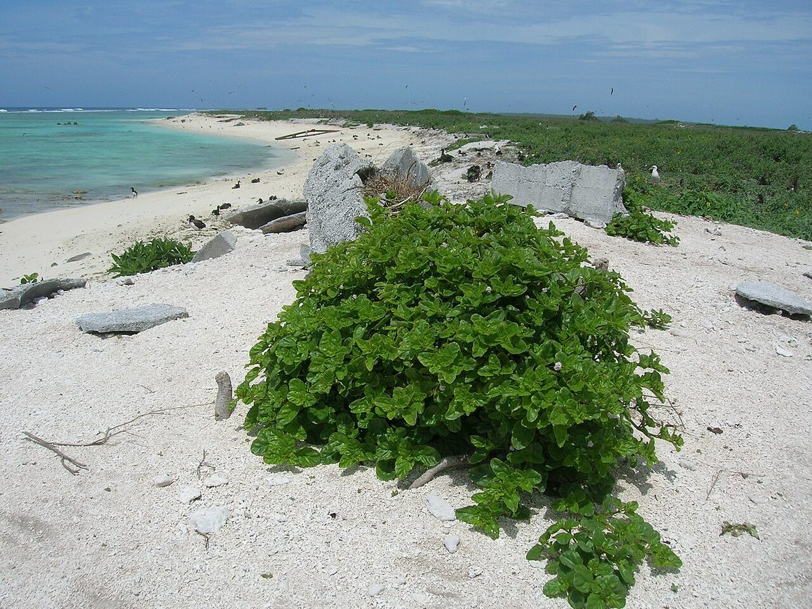

COMMON Beach strand Dune
Boerhavia repens
alena · creeping spiderling


Quick facts
| Family | Nyctaginaceae |
|---|---|
| Scientific name | Boerhavia repens |
| Hawaiian name(s) | alena |
| English name(s) | creeping spiderling |
| Status | Indigenous (native, non-endemic) |
| Conservation | — |
| Coastal zones | Beach strand Dune |
| Occurrence | Indigenous prostrate herb of dry coastal ground, widespread across Kauaʻi's low coastal areas. On the roadless coast it appears on open gravel, coral rubble, and disturbed strand at Māhāʻulepū and lower Nāpali valley mouths. |
How to identify
- Growth form
- A slender prostrate to weakly ascending perennial herb, forming diffuse low mats to rounded cushions from a taproot.
- Size
- Prostrate mats 20–80 cm across; cushions 5–15 cm tall.
- Leaves
- Opposite (a diagnostic pair often visibly unequal in size), simple, oblong to ovate, 1–3 cm long, entire-margined, thin, often slightly fleshy on exposed ground.
- Flowers
- Very small (~2–3 mm), pink to purple-pink, in loose branched cymes at the stem tips. The corolla is actually a coloured calyx (Nyctaginaceae trait) — no true petals.
- Fruit / seed
- A small (~3 mm) elongate, five-ribbed, sticky-glandular anthocarp (accessory fruit) that adheres readily to feet, feathers, and fur — an animal-dispersal adaptation.
- Bark / stem
- Slender green stems, sometimes reddish, often glandular near nodes.
- Where it sits on the coast
- Open ground on strand, dune margins, and dry disturbed coastal flats; tolerant of trampling and dry rubble.
Clinchers (features that lock the ID)
- Opposite oblong leaves often unequal in size within a pair.
- Tiny pink-purple flowers in a loose branched cyme above the mat.
- Sticky-glandular five-ribbed fruit that clings to fingers, clothing, or feathers.
Look-alikes
- Boerhavia coccinea, B. herbstii, other Hawaiian Boerhavia — Multiple Boerhavia species overlap on Hawaiian coasts and are hard to tell apart in the field — the classical clue is the density and stickiness of the fruit glands and the exact colour of the flowers. Confer against Wagner et al. [16] and consider recording the plant as "Boerhavia sp." if uncertain.
- Portulaca oleracea (introduced pigweed) — Portulaca has succulent, plump, obovate leaves and a small yellow 5-petaled flower — very different once inspected.
Ecology
Halophyte and disturbance-tolerant colonizer. The sticky anthocarp disperses by clinging to seabirds and other visitors — the plant's distribution across the Northwestern Hawaiian Islands atolls is a direct signature of that dispersal syndrome. [16], [21], [22]
Cultural significance
Alena is one of several small indigenous coastal herbs known in Hawaiian ethnobotany; framed here without harvest instruction.